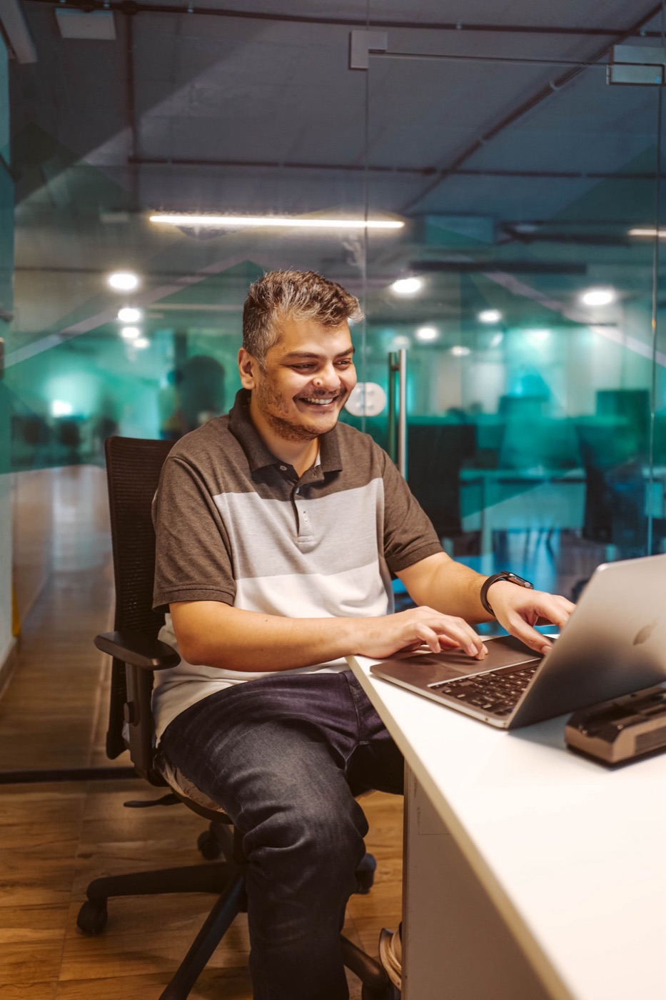
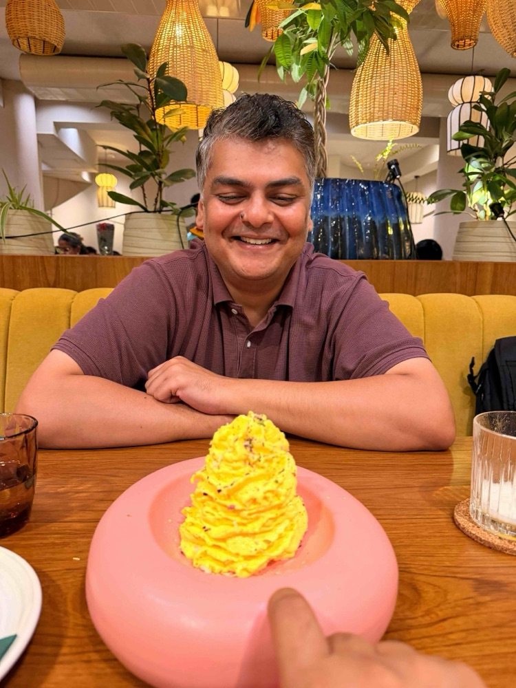

Currently working with realfast, where I own the product experience for AI tools in finance, healthcare and capital markets, the kind of software people need to trust before they act on it. Before this I was Head of Product Design at Truecaller, after twelve years of consumer and B2B products at Sundial, Frontrow, Ola and Swiggy.

Most of 2026 has gone into the enterprise world, where I've been designing human<>agent workflows for clients in regulated industries. Reporting automation, platform migrations, and interfaces for people who aren't developers and shouldn't have to be.
The rest of my time goes into the tools my own team works in: an internal workbench, and a design system that enforces itself in the codebase instead of sitting in Figma waiting for someone to read it.
Outside work I'm making illustrated books for children with AI, and building a SaaS product in hospitality tech.
Two things I'd talk about for too long if you let me.

.